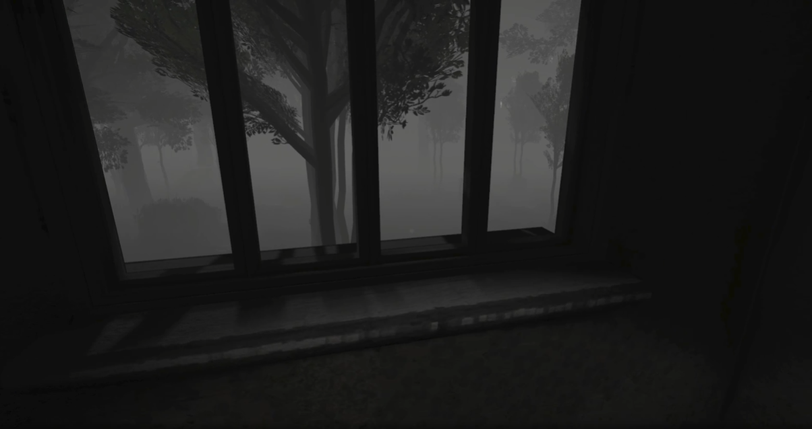
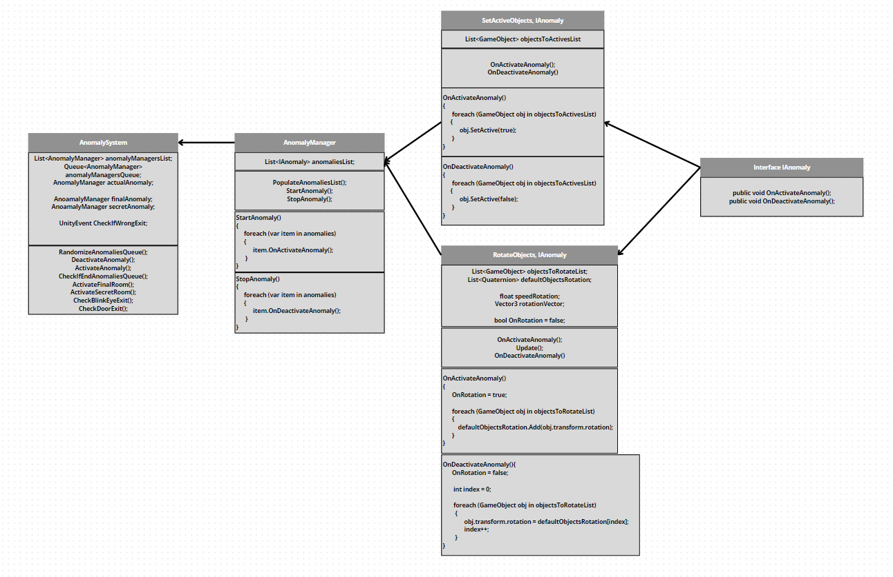

The project is a personal challenge to create an extensible and easily maintainable game, inspired by the sucess of anomaly games. The narrative delves into the genre, exploring the idea of loops and anomalies through personal experiences with lucid dreams and sleep paralysis. The progagonist experience dream loops, repeatedly waking up in their room, which serves as the basis for the game mechanics and the explanation of the anomalies.
Knowledge I used:
Game design
Level design
Project management
Scalable, Modular and Maintainable
Game development
Tools and Languages:
Unity
C#
Canva
This is a Pipeline project
The Idea
The idea for this project came from challenging myself and practicing developing a system that is extensible and easy to maintain. I took advantage of the success of anomaly games to develop a game with a more professional system.
However, even though it was just a project for portfolio and training, I decided to try to do something more coherent, because as it is kind of a new genre, many don't care about the history or even try to explain why the anomalies are happening, so I deciding to carry out an event that involves me a lot that fits very well into this idea of loop and anomalies.
I have a lot of lucid dreams, and as much as it may always seem like the most incredible thing, sometimes something similar to "sleep paralysis" happens, but within the dream itself, I become conscious, "wake up" in my room as I feel. I remember leaving it, but after getting up and taking the first steps and blinking, I automatically go back to my bed, and I stay in this loop until I finally wake up, along with this, sometimes I can even move around the house, and find things outside the usual like a bunch of stuffed animals in the living room (in this case it would be a dream hahaha), but then I realize that I'm dreaming and try to wake up again.
I don't know if this has a specific name, but it is an event that fits very well with this idea, and explains the loop and anomalies that the brain tries to reproduce as if they were real.

The Development
I used a lot of free assets since the idea was a simple project, but even so I was careful to make the level design appropriate for the idea of being a scene that gives a strange feeling of not thinking it's in the right place.
Some systems like the pages and the effect of closing your eyes I reused some codes from old projects like "When are you coming?" and "Hope", but just to complement, these systems are old and a lot can be improved to also become something more professional, as I said in another portfolio I'm still redoing some of these systems, like the messaging/pages system, which already It has improved, but it can get even better with the use of JSON to obtain text information in different languages.
The main system, which is one of the anomalies, I even felt confident in developing it, I ended up thinking a lot with total focus on extensibility and maintenance, and I think the format in which I decided to deal with the system turned out very well, it was easy to add or remove new elements in anomalies, and it is also easy to add new anomalies.

The focus was on making an abstraction so that each anomaly could be called in the same way, but each anomaly would have its own peculiarities and behaviors, since one anomaly could just make objects disappear, while another could make objects appear and rotate them, and so Here it goes.
So for this I used the lAnomaly interface to create the methods for activating and deactivating behaviors, and from this I created several behavior scripts that implemented this interface, so in the script for activating objects, in the activation method it runs a loop in the list of selected objects in the inspector and activates all of them in the scene, and deactivation does the opposite to return to the normal scene.
However, as previously stated, an anomaly can perform one or more behaviors, so to take care of this management I created Anomaly Manager, it has a list of lAnomaly interfaces, at the start of the game it searches among the object's components which scripts have this interface and stores them all in its list, so when the anomaly is activated it activates all the interfaces it has in the list, whether they are activating or deactivating objects in the scene, rotating objects, or any behavior created.
And to manage the system as a whole, not allowing the same anomaly to happen more than once, to activate or deactivate the current anomaly, Anomaly System was created, it takes care of it like a StateMachine, it takes the first in the queue of anomalies, activates and stores it in its currentAnomaly variable, then when necessary it deactivates the current anomaly to return the scenario to normal, and checks whether or not it activates the next anomaly in the queue.
Here is an example of how to create and edit current game anomalies with this system.
Basically I create an object with the name of the anomaly, in it I place the AnomalyManager component, and the action components of that anomaly, if I want it to activate or deactivate objects, play sounds, increase in size, among others, automatically because it is in the same object of the main component, it already takes them all and puts them in its list, so activating them already activates all the behaviors.
And to add it to the game's list of anomalies, we can go to AnomalySystem, and add another anomaly to the list.
The Final Result
The end result was extremely satisfying to see that the system works and to be able to complete my challenge, the game itself was very simple, it doesn't have many difficult anomalies, or an Oscar-worthy story, but it is consistent with the whole idea for a project that I can in the future if I want to add new content and delve deeper into the story, I'm excited to see players' reactions to this demo.
The Conclusions
I believe that in this way, a very scalable and easy-to-maintain system has been created following the SOLID principles. It is great to see my codes and systems improving from the beginning, there is still a lot more I can do and study to improve each time, but this system simple will show that I am ready for any challenge that lies ahead.
The Story
As the idea was to focus mainly on the practical development of the system, I didn't go too deep into the history, or the player's progress, but as I said in the idea, the game does have a story, and it is about a boy who realizes that he has become trapped, and tries to walk around the house trying to find a way to wake up, this part is told through the letters that sometimes appear amid the anomalies, the protagonist is afraid of never waking up again, and fears that he is in a coma since he is conscious, but only within the dream.
The StoryTelling
The game starts with the player in the room, at first glance there will never be an anomaly or letter, this is to show the player what the original scenario is like, then he walks and as there is no anomaly he chooses one of the side doors to leave the house, however, before he knows it he is back in his room, and the loop begins, each time some anomaly or letter may appear randomly, and if the player finds an anomaly instead of leaving through the door he just needs to close the doors. eyes that will automatically return to the bed.
The game has two endings, one if he manages to get all 5 pages without missing an anomaly, or if he doesn't have all the cards.
Contact Me
Thank you, your contact has been sent!
Sorry! Something happened and your email was not sent.
@ 2024 Akapaya. Todos os direitos reservados.
Akapaya, logotipo da Akapaya são marcas registradas de Akapaya
Arte desenvolvida por Thamires Dantas.
Design do site desenvolvido por Gregory Valentim.
Site desenvolvido por Gregory Valentim.